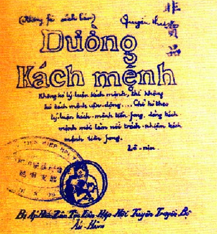

Đường Kách Mệnh
Tác phẩm lý luận quan trọng viết năm 1927, trình bày quan điểm về con đường giải phóng dân tộc và cách mạng xã hội.
Khám phá di sản văn học và tư tưởng qua các tác phẩm tiêu biểu
Tác phẩm lý luận quan trọng viết năm 1927, trình bày quan điểm về con đường giải phóng dân tộc và cách mạng xã hội.
Văn kiện lịch sử được đọc ngày 2/9/1945 tại Quảng trường Ba Đình, tuyên bố sự ra đời của nước Việt Nam Dân chủ Cộng hòa.
Di sản tinh thần quý báu viết tháng 5/1969, thể hiện tâm huyết và những mong muốn cuối cùng của Người dành cho Đảng và nhân dân.
Tập thơ được viết khi Người bị giam giữ tại Trung Quốc (1942-1943), thể hiện ý chí kiên cường và lòng yêu nước thiết tha.
Bài viết thể hiện tinh thần tự phê bình và phê bình, phương pháp tu dưỡng đạo đức cách mạng của Người.
Các bài viết về tu dưỡng đạo đức cách mạng, đặc biệt là "Nâng cao đạo đức cách mạng, quét sạch chủ nghĩa cá nhân".
Các lá thư, lời kêu gọi gửi đồng bào trong những thời điểm lịch sử quan trọng, thể hiện tình yêu thương và sự gắn bó với nhân dân.
Các bài báo, tạp chí do Người sáng lập và viết như "Người Cùng Khổ", "Thanh Niên", góp phần tuyên truyền và giáo dục cách mạng.
Những bài thơ của Người với giọng điệu giản dị, gần gũi nhưng chứa đựng tình yêu thương sâu sắc đối với đất nước con người.